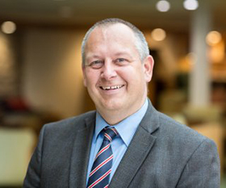
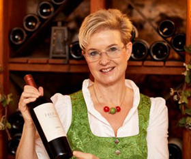
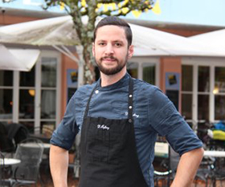
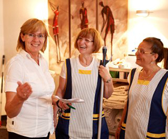
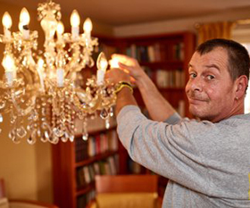
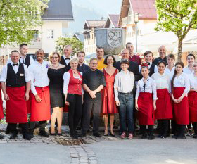

Ihr Team im Hotel Valora

André Brandt - Hoteldirektor
"Seit 25 Jahren bin ich nun mit Leib und Seele Hoteldirektor in meinem Hotel
Valora."
Bekannterweise ist Hoteldirektor André Brandt ganz und gar kein Ostfriese.
Denn er kommt aus dem westfälischen Duisburg.
Mit 15 Jahren ist er dann schlussendlich ganz an die Ostsee gezogen und hat die Gastronomie für
sich entdeckt.

Sabine Voll - Restaurantleiterin
"Gastlichkeit heißt für mich unsere Gäste zu umsorgen, damit sie sich rundum
wohlfühlen."
Ursprünglich kommt Sabine Voll aus Münster in Nordrhein-Westfalen.
Nach Ihrer Ausbildung hat sie in verschiedenen Restaurants als Serviceleiterin gearbeitet.
2016 hat es die Weinliebhaberin an die Ostsee verschlagen.
Hier berät sie die Valora-Gäste mit viel Herzlichkeit zu den aktuellsten Gerichten und edelsten
Tropfen.

Daniel Höfling - Küchenchef
"Warum weit reisen, wenn das Gute doch so nah ist?"
So lautet mein Grundsatz in der Küche des Valora-Restaurants.
Die Ostseeregion bietet so viele regionale Produkte, aus denen ich mit Feuereifer bodenständige,
aber auch ganz besondere Gerichte kreiere.
Genießen Sie mit allen Sinnen!

Irmgard Wiedemann - Hausdame
"Arbeiten im Hotel Valora ist für mich mehr als nur ein Job. Ich freue mich auf jeden
Gast und gebe gerne den ein oder anderen Urlaubstipp"
Irmgard Wiedemann ist gelernte Hotelfachfrau und hat schnell ihre Leidenschaft fürs Housekeeping
entdeckt.
Seit 2006 ist sie nun Teil des Valora-Teams und kümmert sich nicht nur um die Hotelzimmer,
sondern auch um alle öffentlichen Bereiche.
Dabei sammelt sie von unseren Gästen Bestnoten im Bereich Sauberkeit.

Karlheinz - Haustechnik
"Als echter Ostfriese mag ich die Arbeit mit Blick auf die Ostsee"
Karlheinz ist immer da, wo man ihn braucht! Eine defekte Glühbirne, kleine und größere
Reperaturen - auf ihn kann man sich verlassen! Er ist nicht nur Tiefschnee-Jongleur, wenn es im
Winter ums Schneeräumen geht, sondern auch Chaffeur.
Denn er holt unsere zuganreisenden Gäste direkt vom Bahnhof ab und bringt sie sicher wieder
zurück.

Unser Team für Ihren Urlaub
"Hinter Allem steht ein riesen Team an "guten Geistern" in den unterschiedlichsten
Bereichen.
Jeder einzelne trägt dazu bei, dass wir Ihnen ein unvergessliches Urlaubserlebnis verschaffen
können.
Jede einzelne Hand in der Küche, an der Rezeption, auf der Etage und hinter den Kulissen.